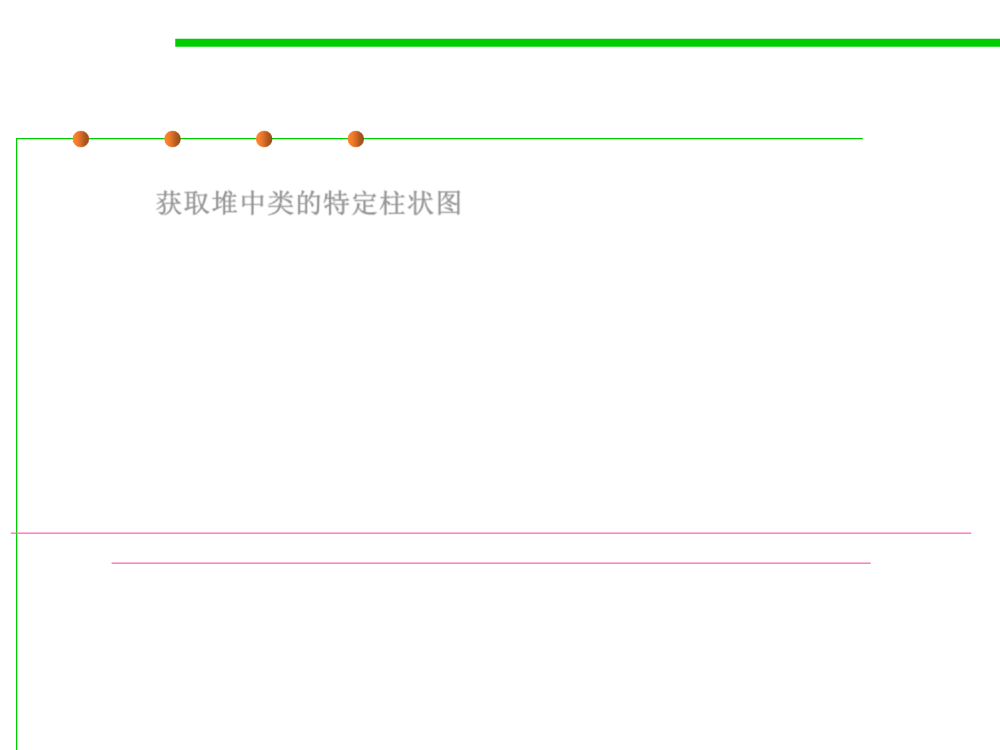

Jmap
8.2 Dynamic Program Analysis Methods and Tools
▪ jmap -histo for obtaining a class specific histogram(柱状图) of the
heap. 获取堆中类的特定柱状图
– When the command is executed on a running process, the tool prints the
number of objects, memory size in bytes, and fully qualified class name for
each class.
– Internal classes in the Java HotSpot VM are enclosed in angle brackets.
– The histogram is useful in understanding how the heap is used.
https://docs.oracle.com/javase/8/docs/technotes/guides/troubleshoot/tooldescr014.html
https://docs.oracle.com/javase/8/docs/technotes/tools/unix/jmap.html